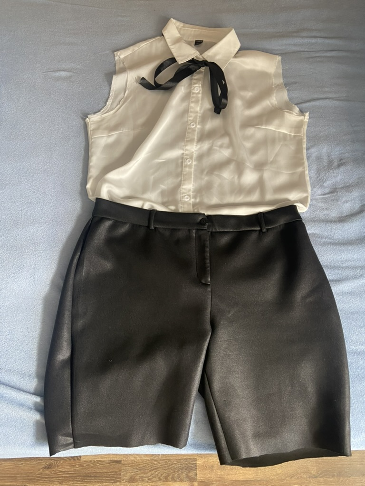

První nápad bylo koupit látky a ušít její outfit from scratch, ale protože vůbec šít neumím (natož tak zrovna oblečení) a bylo by to dost drahé, tak jsem se rozhodla že si koupím nějaké podobné oblečení, které upravím aby vypadalo jako to její. Jelikož se mi nechce chodit do obchodů s oblečením osobně, tak jsem se dívala na internet. Kupovat si něco nového je za A) drahé a za B) škoda "ničit", tak jsem našla kalhoty a košili na genesis a objednala si je (fotky toho jak to vypadalo předtím, než jsem to upravila nemám :'( )
Z košile jsem odpárala rukávy a kalhoty jsem zkrátila. Ještě ty kraje musím zašít. V galanterii jsem si koupila dlouhou a tenkou černou stužku. Z ní jsem si uvázala mašli kolem krku a zbytek odstřihla, takže ta její mašle pod krkem bude dlouhá tak akorát (pokud to teda dobře uvážu). Zatím to vypadá takhle:

Sice pořád nic moc, ale ještě to chce hodně úprav. Tu oblast kolem ramen musím zkrátit, konec kalhot musím upravit a možná ještě přidat kapsy, ale to asi ani dělat nebudu. Černé nadkolenky mám, ale budu muset nějak vymyslet to, aby mně nepadaly. Napadlo mě si pod ně dát silonky a zevnitř nadkolenek dát nějaký suchý zip. Nevím jak to cosplayeři řeší, budu to ještě muset nějak vyzjistit. (Na sobě to ukazovat nebudu, vypadám v tom jak lednička)
Kamarádka mi nabídla paruku, kterou už měla, takže jsem nemusela kupovat novou. Ta paruka měla dobrou barvu, byla prakticky nová, jedinné je potřeba udělat je změnit střih. Vlasy v zadu jsou delší a hlavně hodně husté, takže se z toho ten "drdůlek" co má Reze v zadu dělá těžko. Potom ještě je potřeba upravit ofinu a vlasy po boku. Nikdy jsem nic s parukami ani vlasy nedělala, takže to bude hodně zajímavé :D.